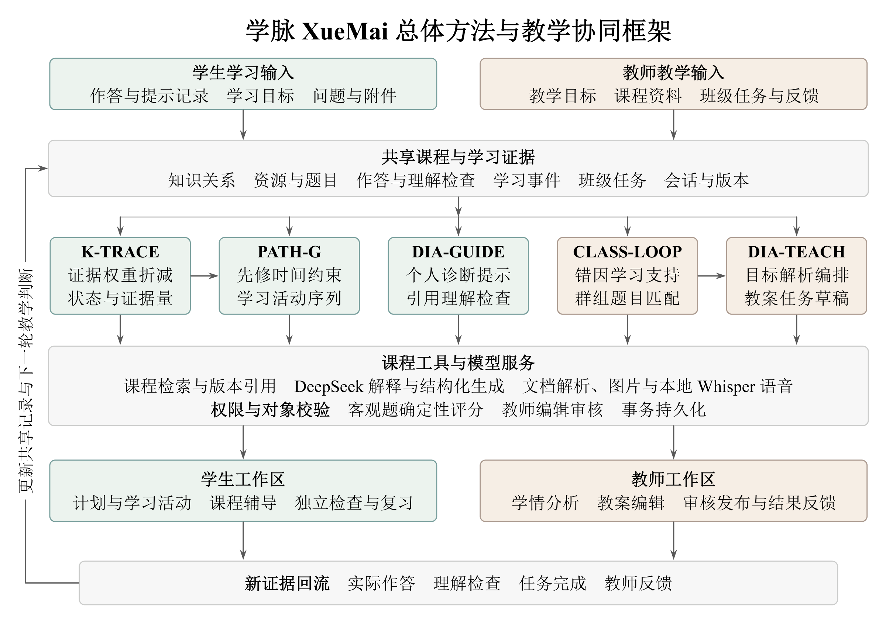

<!doctype html>
<html lang="zh-CN"><meta charset="utf-8"><title>学脉作品与开发档案</title>
<style>
*{box-sizing:border-box}html,body{margin:0;width:100%;height:100%;overflow:hidden}body{font-family:'Microsoft YaHei',sans-serif;background:#f5f3ec;color:#203f3d}button{font:inherit}main{height:100%;padding:42px 76px 75px}.masthead{display:flex;align-items:center;justify-content:space-between;height:54px;border-bottom:1px solid #ccd6ce;padding-bottom:20px}.wordmark{font-family:SimSun,serif;font-weight:bold;font-size:32px;letter-spacing:3px}.masthead small{font-size:18px;color:#647971}.stage{height:calc(100% - 54px);padding-top:28px}h1,h2,p{margin:0}h1{font-size:46px;line-height:1.4;font-weight:600;letter-spacing:1px}h2{font-size:30px;line-height:1.5;font-weight:500}.eyebrow{color:#7e6554;font-size:20px;margin-bottom:16px;letter-spacing:2px}.cover{height:100%;display:grid;grid-template-columns:1fr 1.03fr;gap:74px;align-items:center}.cover h1{font-family:SimSun,serif;font-size:90px;line-height:1.35}.cover .subtitle{font-size:31px;margin:24px 0 34px;line-height:1.7}.signature{font-size:25px;line-height:1.9;color:#5d7169}.cover-art{position:relative;height:590px}.cover-art .window{background:white;border:1px solid #d3ded6;border-radius:18px;overflow:hidden;box-shadow:0 22px 55px #304b3b16}.cover-art img{width:100%;display:block}.window:first-child{position:absolute;top:0;left:0;width:94%}.window:last-child{position:absolute;right:0;bottom:0;width:84%;border-color:#d8cbb9}.window-label{font-size:21px;padding:17px 22px;background:#eaf0e9}.window:last-child .window-label{background:#eee5d7;color:#7e6554}.pain-grid{display:grid;grid-template-columns:repeat(3,1fr);gap:28px;margin-top:40px;height:calc(100% - 130px)}.pain-card{padding:27px;border:1px solid #ced9d1;border-radius:18px;background:#fffefb;display:flex;flex-direction:column;overflow:hidden}.pain-card h2{font-size:30px;line-height:1.6}.pain-card p{font-size:23px;line-height:1.7;color:#5c726b;margin:13px 0 24px}.pain-card img{width:100%;margin-top:auto;border:1px solid #dae3db;border-radius:10px}.pain-card:last-child{border-color:#d4c7b9}.framework{display:grid;grid-template-columns:minmax(0,1fr) 370px;gap:42px;height:100%;align-items:center}.framework{grid-template-rows:minmax(0,1fr);min-height:0}.framework .visual{position:relative;height:100%;min-height:0;min-width:0;display:flex;align-items:center;justify-content:center}.diagram-frame{position:relative;height:100%;aspect-ratio:490.16/342.21;max-width:100%}.framework img{height:100%;width:100%;object-fit:contain;display:block}.framework h2{font-size:30px;margin-bottom:24px}.framework p{font-size:23px;line-height:1.85;color:#536a62}.focus{position:absolute;border:3px solid #2e6a67;border-radius:9px;pointer-events:none;transition:all .8s;opacity:0}.flow-kicker{padding-left:20px;border-left:4px solid #2e6a67;margin-top:30px}.flow-kicker.teacher{border-color:#7e6554}.dev-header{display:flex;justify-content:space-between;align-items:flex-start}.dev-header h1{font-size:36px}.archive{font-size:19px;color:#65796f;white-space:pre-line;line-height:1.7;text-align:right}.steps{display:flex;gap:10px;margin-top:22px}.steps button{border:0;border-radius:7px;background:#e5e9e1;color:#52685f;font-size:18px;padding:10px 18px}.steps button.active{background:#2e6a67;color:#fff}.evidence{display:grid;grid-template-columns:1.1fr 1fr;gap:26px;height:calc(100% - 140px);margin-top:24px}.pane{border:1px solid #ccd9ce;border-radius:14px;background:#fffefb;overflow:hidden;display:flex;flex-direction:column}.pane header{padding:15px 23px;background:#e9efe7;font-size:19px;color:#43645a;display:flex;justify-content:space-between}.pane.code{background:#f1f3ee}.pane.code header{background:#e2e8de}.pane pre{white-space:pre-wrap;word-break:break-word;font-family:'Microsoft YaHei',sans-serif;font-size:25px;line-height:1.85;padding:24px 28px;margin:0;overflow:auto;scroll-behavior:smooth;flex:1}.pane.code pre{font-family:Consolas,'Microsoft YaHei',monospace;font-size:20px;line-height:1.65;color:#355047}.source{font-size:16px;line-height:1.6;color:#6d7d73;padding:13px 24px;border-top:1px solid #dce3d9}.summary{height:100%;display:flex;align-items:center;justify-content:center;text-align:center}.summary h1{font-family:SimSun,serif;font-size:61px;line-height:1.7}.summary .signature{margin:35px auto}.summary p{font-size:25px;color:#5d7169;line-height:1.8}.enter{animation:enter .5s ease-out}@keyframes enter{from{opacity:0;transform:translateY(9px)}to{opacity:1;transform:none}}
</style>
<style>.stage>div{height:100%}.development,.pain{display:flex;flex-direction:column;gap:22px}.development .evidence{height:auto;min-height:0;flex:1;margin-top:0}.pain-grid{height:auto;min-height:0;flex:1;margin-top:4px}.pain h1{font-size:44px}</style>
<main><header class="masthead"><span class="wordmark">学脉 <small>XueMai</small></span><small>师生双端AI个性化智慧教育平台</small></header><div class="stage" id="stage"></div></main>
<script>
let boards,facts;window.ready=Promise.all([fetch('boards.json').then(r=>r.json()),fetch('product.json').then(r=>r.json())]).then(([b,f])=>{boards=b;facts=f})
const stage=document.querySelector('#stage');const images='../../technical-report/images/';
window.show=async name=>{await window.ready;stage.innerHTML='';stage.className='stage enter';let view=document.createElement('div');stage.append(view);const author=facts.author;
if(name==='intro'){view.className='cover';view.innerHTML=`<section><p class="eyebrow">第九届传智杯 · ${facts.track}</p><h1>学脉<br><span style="font-size:55px;letter-spacing:4px">XueMai</span></h1><p class="subtitle">把一道错题的反馈<br>接上下一步学习与教学</p><p class="signature">${author.school} · ${author.major}<br>${author.name}</p></section><div class="cover-art"><div class="window"><div class="window-label">学生 · 课程学习与个人辅导</div></div><div class="window"><div class="window-label">教师 · 学习证据与针对性指导</div></div></div>`;return {name,duration:16}}
if(name==='pain'){view.className='pain';view.innerHTML='<p class="eyebrow">从课后巩固中的具体困难出发</p><h1>做完一道错题，学习还需要继续</h1><div class="pain-grid"><article class="pain-card"><h2>错在哪里，先补什么？</h2><p>把一次作答连接到知识证据、先修内容与下一项活动。</p></article><article class="pain-card"><h2>材料很多，怎样接着学？</h2><p>让讲义、视频与实验围绕同一个知识和实际困惑组织。</p></article><article class="pain-card"><h2>全班的困难，怎样分别回应？</h2><p>从具体作答形成关注群组，再检查任务后的学习表现。</p></article></div>';return {name,duration:22}}
if(name==='framework'){view.className='framework';view.innerHTML='<div class="visual"><div class="diagram-frame"><div class="focus"></div></div></div><section><p class="eyebrow">总体方法</p><h2>两条教学业务线<br>共享课程与学习证据</h2><p class="flow-kicker">学生的知识状态、学习路径与个人辅导。</p><p class="flow-kicker teacher">教师的错因分层、教学方案与任务审核。</p><p style="margin-top:30px">资料、模型与业务工具协作，实际结果继续形成新证据。</p></section>';return {name,duration:27}}
if(name==='outro'){view.className='summary';view.innerHTML=`<section><p class="eyebrow">学脉 XueMai</p><h1>让学习有据可循<br>让教学接得住反馈</h1><p class="signature">${author.school} · ${author.major} · ${author.name}</p><p>感谢各位评委老师观看</p><p style="font-size:20px;margin-top:30px">源码、技术文档与演示工程完整提供</p></section>`;return {name,duration:14}}
let index=Number(name),b=boards[index];view.className='development';view.innerHTML='<div class="dev-header"><section><p class="eyebrow"></p><h1></h1><div class="steps"></div></section><p class="archive"></p></div><div class="evidence"><article class="pane"><header><span class="kind"></span><span>真实记录节选</span></header><pre class="original"></pre><footer class="source"></footer></article><article class="pane code"><header><span>对应Git对象</span><span>代码差异与提交</span></header><pre class="diff"></pre></article></div>';view.querySelector('.eyebrow').textContent=b.chain;view.querySelector('h1').textContent=b.title;view.querySelector('.archive').textContent=b.date+'\n开发档案回放';view.querySelector('.kind').textContent=b.stage;view.querySelector('.original').textContent=b.text;view.querySelector('.source').textContent=b.source;view.querySelector('.diff').textContent=b.git_evidence;let labels=['需求','实现','问题','修复','验证','提交'];labels.forEach((label,i)=>{let button=document.createElement('button');button.textContent=label;button.className=i===b.step?'active':'';button.onclick=()=>window.show(Math.floor(index/6)*6+i);view.querySelector('.steps').append(button)});return b}
window.highlight=index=>{let focus=document.querySelector('.focus');if(!focus)return;focus.style.opacity='1';let areas=[{left:'3%',top:'8%',width:'96%',height:'25%'},{left:'3%',top:'35%',width:'59%',height:'20%'},{left:'64%',top:'35%',width:'35%',height:'20%'},{left:'2%',top:'56%',width:'97%',height:'40%'}];Object.assign(focus.style,areas[index]);}
</script></html>
